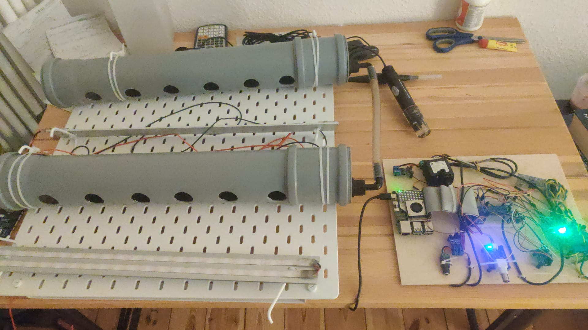
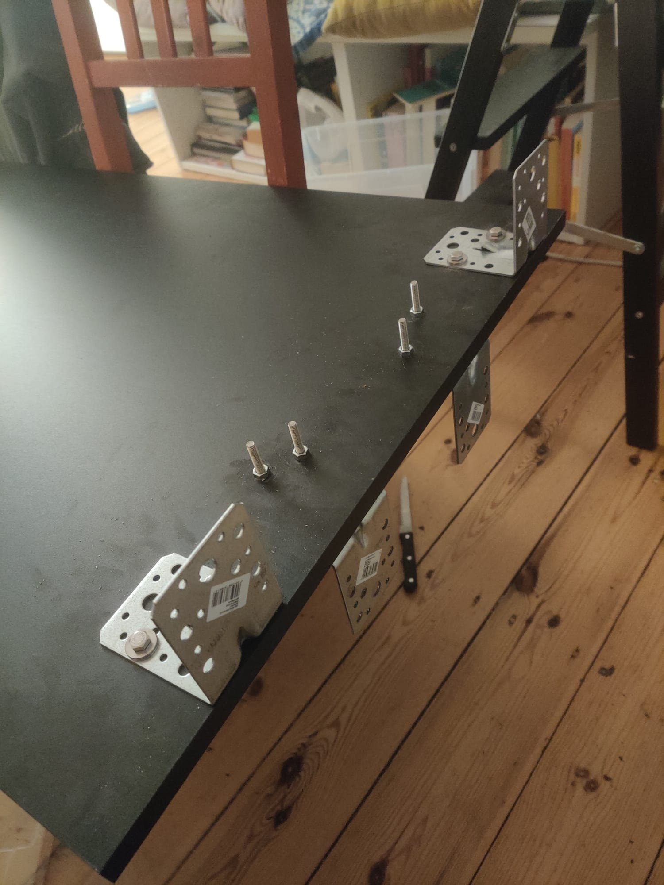
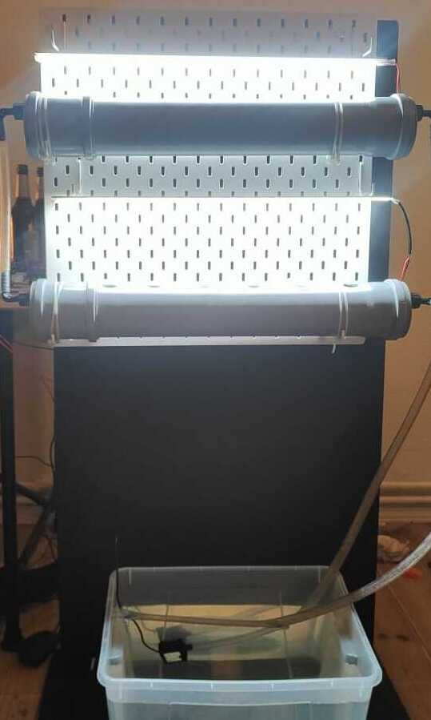
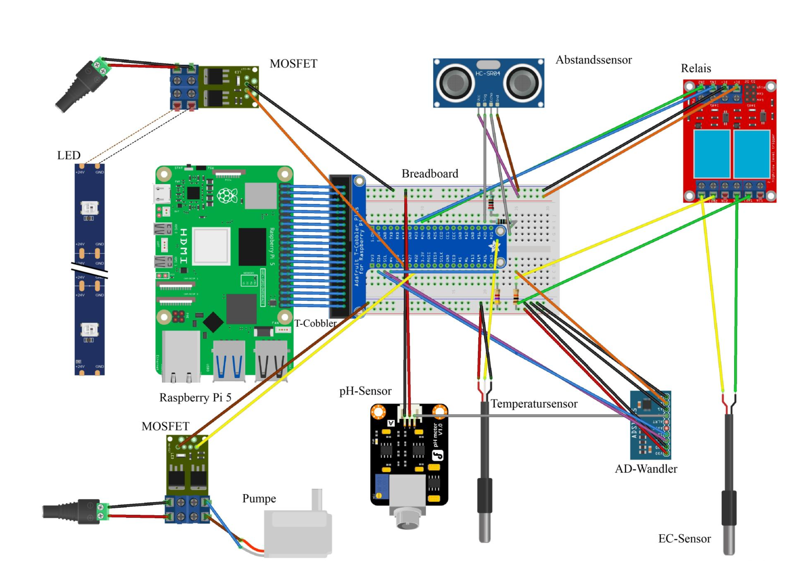
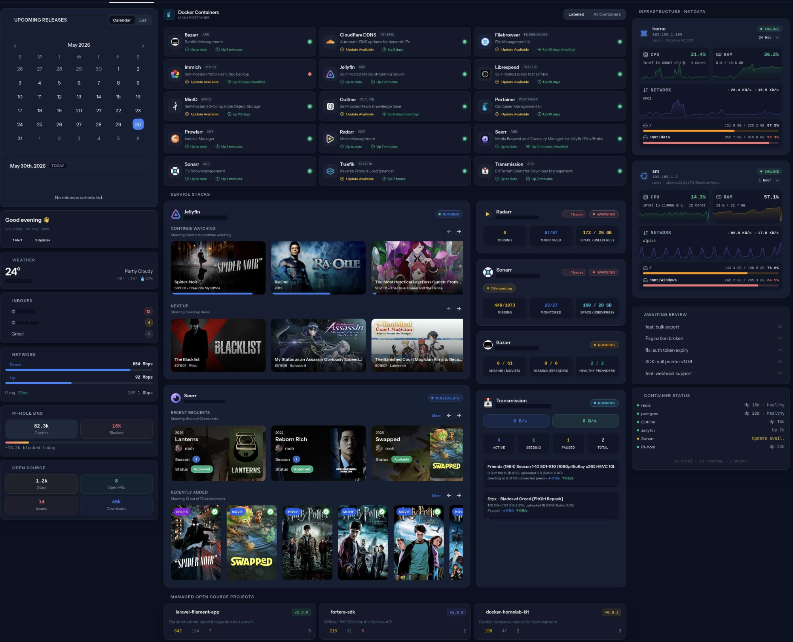

Hydroponic IoT System
- Raspberry Pi 5
- MicroPython
- MQTT
- Node-RED
- ESP8266
- DHT22
- MOSFET
- Linux
The idea for this project arose after gaining deep interest in microelectronics and some unfortunate plants dying at my hands. The aim is to build an end-to-end IoT hydroponic plant monitoring system built on Raspberry Pi 5. Sensors feed live data via MQTT to a Node-RED dashboard, with automated pump and LED control through MOSFET modules and relay boards.




Home Server / Self-Hosted Infrastructure
- Raspberry Pi
- Linux
- Pi-hole
- Nextcloud
- Nginx
- SSH
- DNS
- Networking
These days being on mainstream internet feels exhausting with the doomscrolls, dark algorithms, brainrot. I mainly want a personal internet where i get to choose what i want to on my computer, and replace all subcriptions and to have all my media stored, so starting to build my owm homelab seem the perfect idea.
Built on a Raspberry Pi running Pi OS Lite bare metal with a Pimoroni NVMe base for real storage. The stack covers what actually matters: Jellyfin for media, Immich for photos, Komga for ebooks and manga, Readeck for offline article archiving, Miniflux for RSS, and Livereload in a Docker container for local web development, all accessible over LAN via Nginx Proxy Manager with readable URLs instead of raw ports. Both SSDs are encrypted and a single boot script handles decryption and spins up every service at once. Borg backs the data drive to a second SSD twice a week.



Network Monitoring Stack
- Grafana
- Prometheus
- Netdata
- Pi-hole
- Linux
- Bash
- Networking
Project: ...
Process: ...
Result: ...


E-ink Album Display
- Raspberry Pi Zero 2W
- Python
- Spotify API
- Pillow
- Floyd-Steinberg Dithering
- E-ink
- Linux
Project: A daily album discovery tool that pulls a random album from a Spotify playlist and renders it on a 7.3" Pimoroni Inky Impression e-ink display — a physical, screenless way to rediscover music without reaching for a phone.
Process: Implemented the Spotify Web API via spotipy to fetch random tracks and retrieve album metadata. The main technical challenge was the display's 7-color e-ink palette — solved with Floyd-Steinberg dithering in Pillow to convert album art while preserving visual fidelity. Added QR code generation so the album opens directly in Spotify, and built an interactive playlist manager for switching between playlists. Total refresh cycle: ~15 seconds end-to-end.
Result: Runs headlessly on a Pi Zero 2 W, updating once daily. The dithering implementation and smart track name matching — handling Remastered, Remix, and alternate versions — were the most technically interesting problems.